Atlantic Fields Golf House
The social and dining centerpiece of the Atlantic Fields private golf community — a slab-to-slab window wall dining room whose operable panels convert it into an open-air pavilion over the fairway.
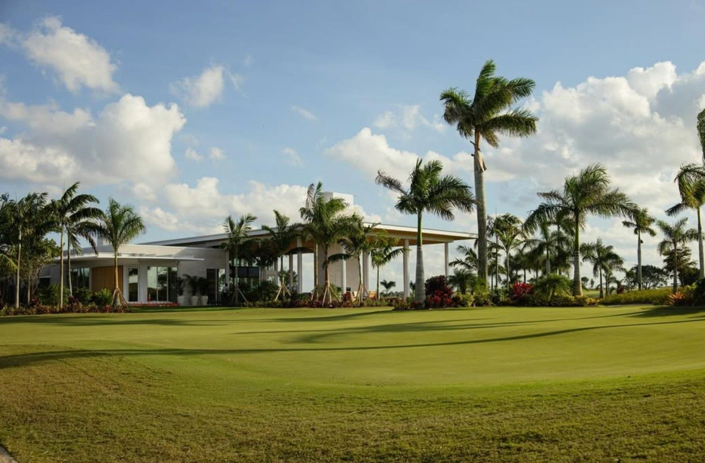
Every opening. One sub.
The Golf House is a two-structure complex — the main building with its signature window-wall dining room, and a separate pro shop — both designed to open completely to the Florida landscape. Built by Proctor Construction, the project required ACG to execute across multiple glazing systems on one subcontract: window wall, operable lift-and-slide panels, storefront entrances, and interior glazing.
The wall that opens to the first tee.
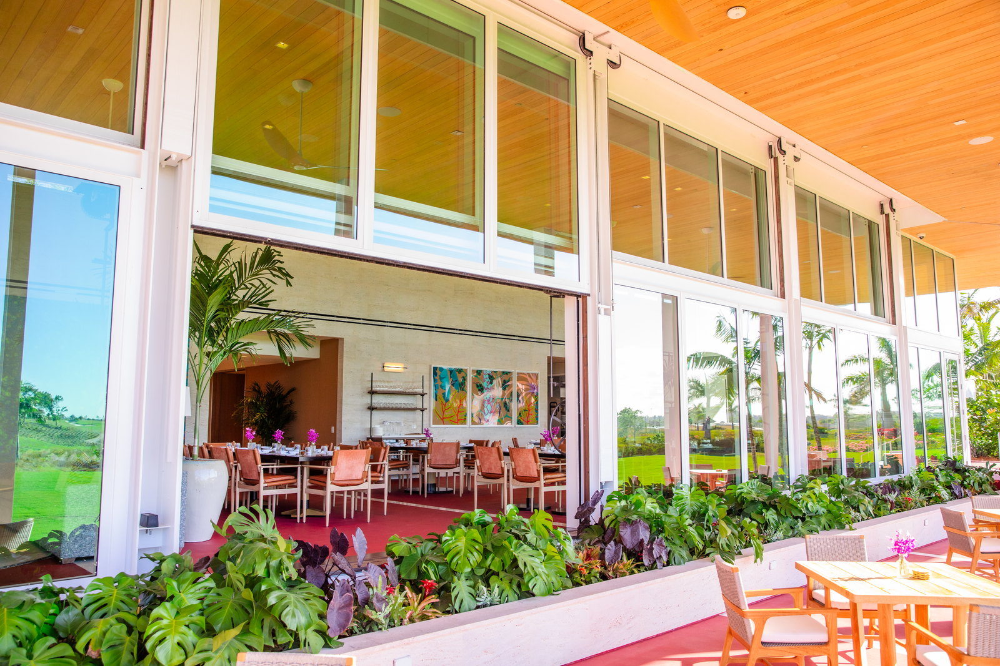
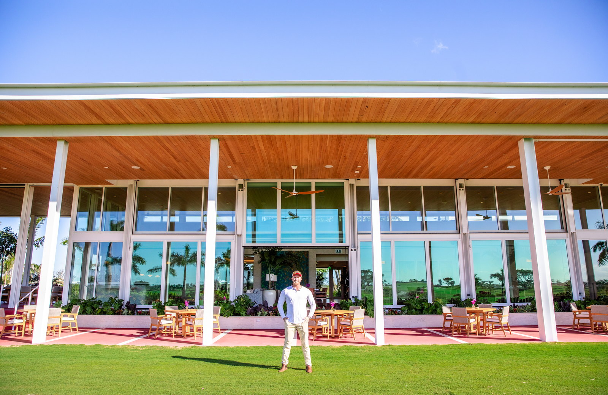
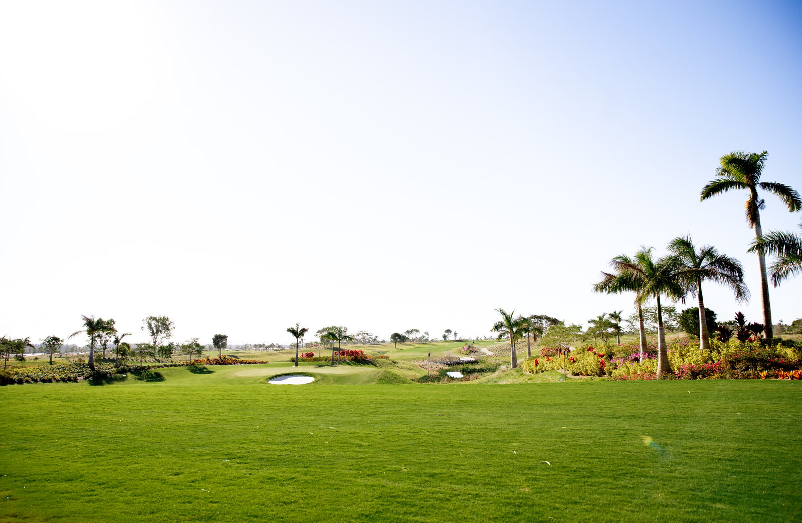
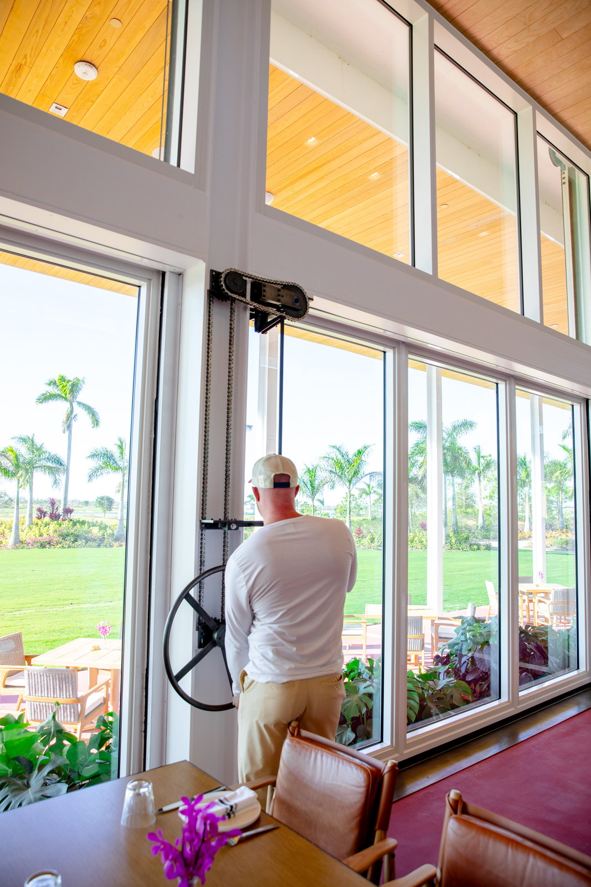
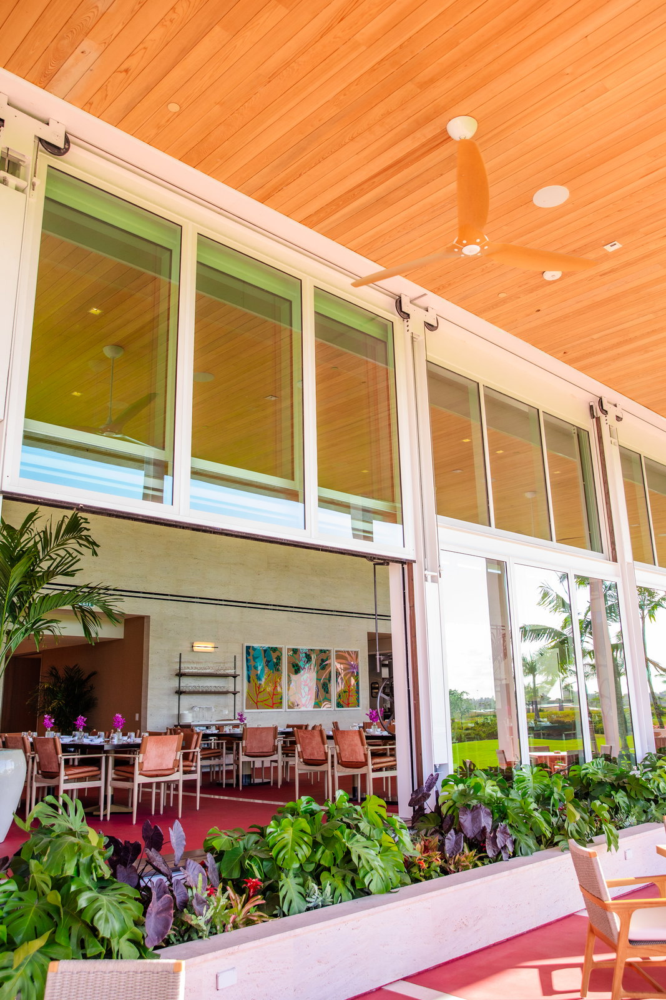
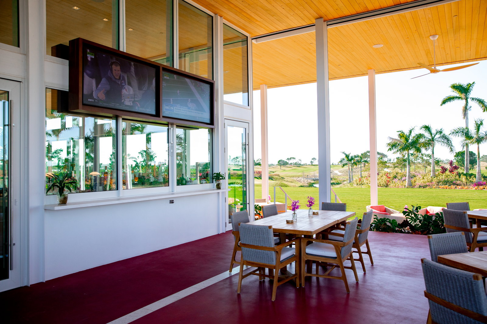

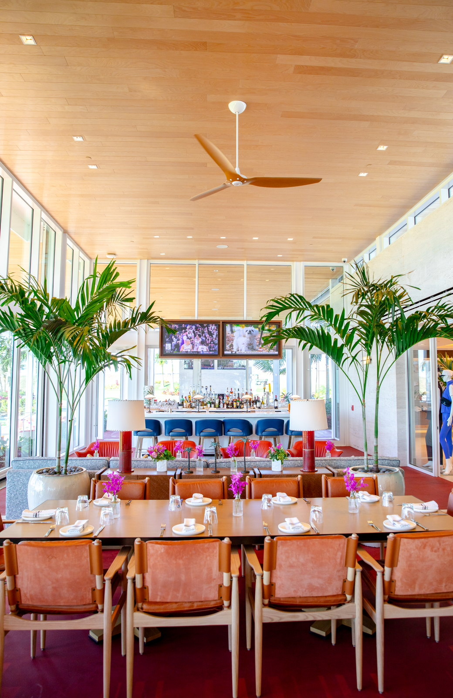
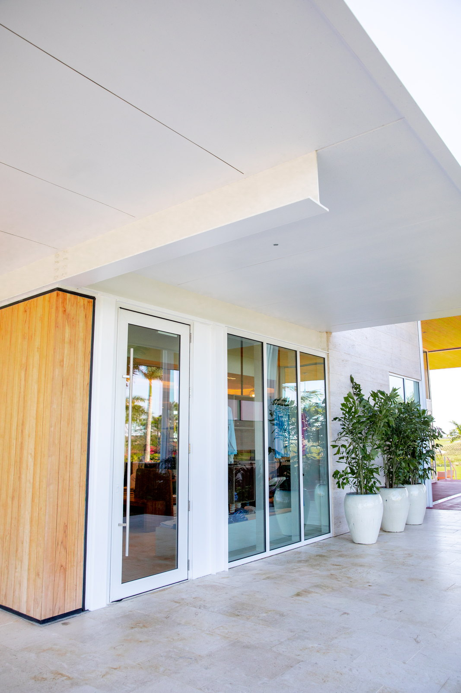
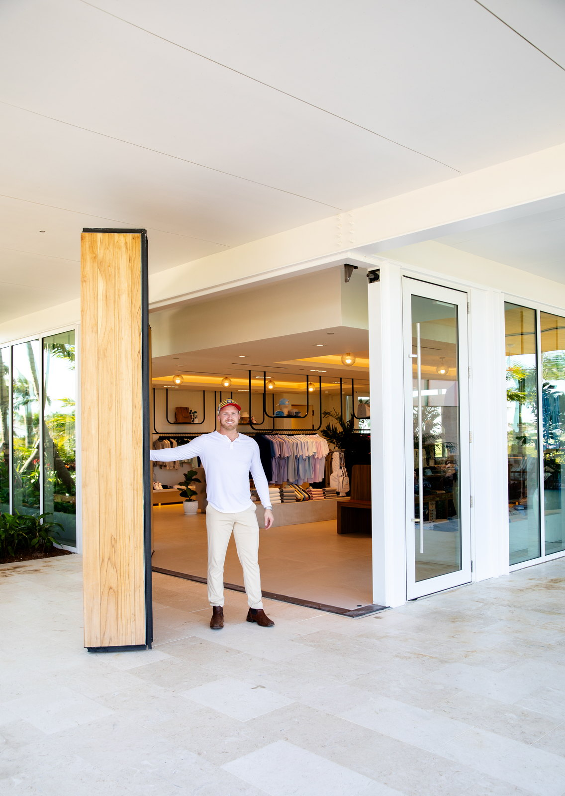
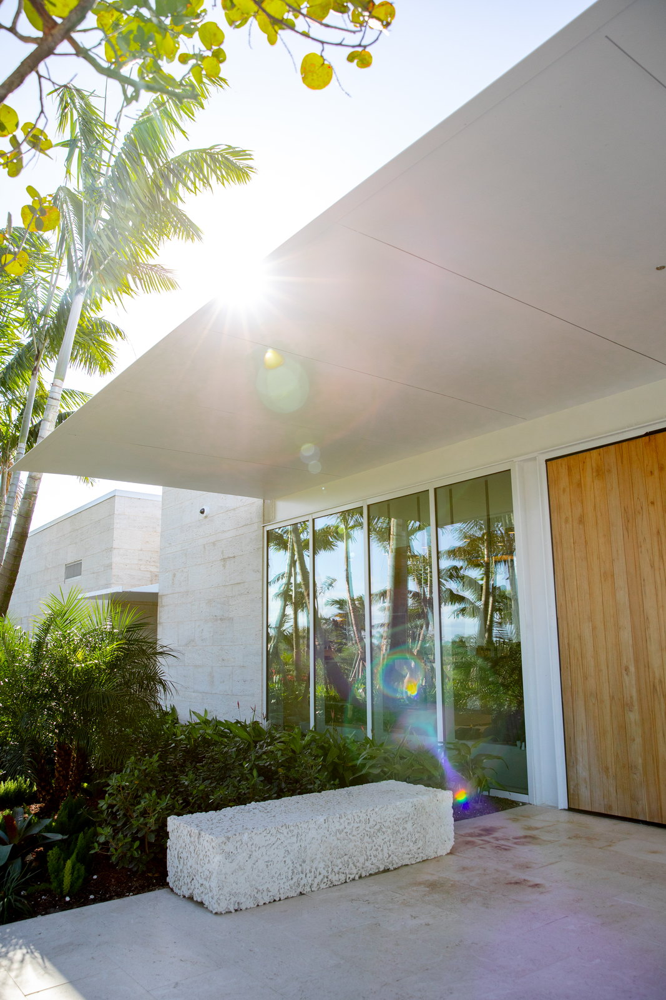
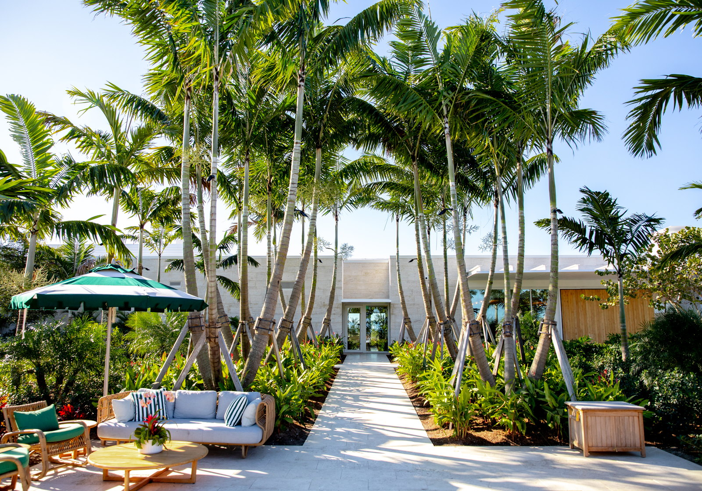
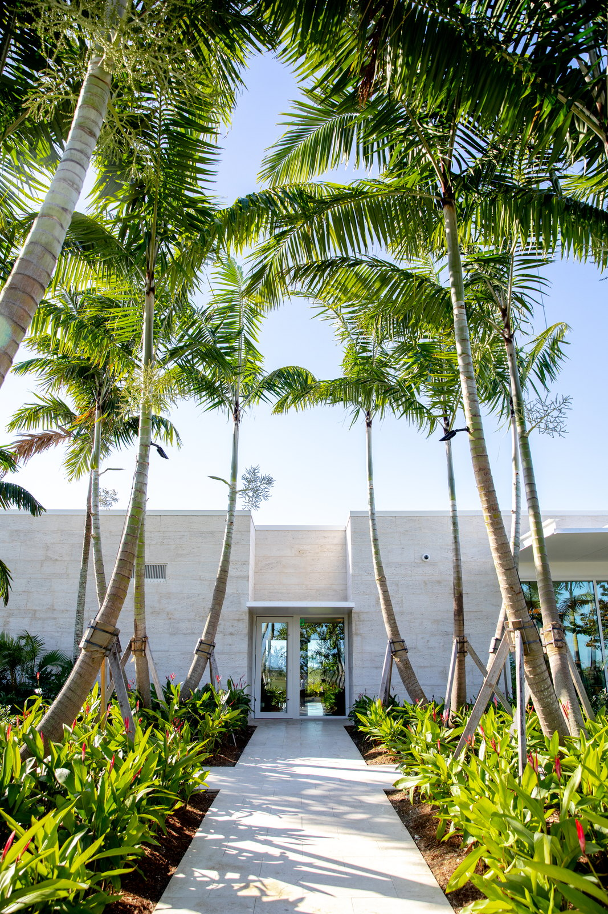
How ACG delivered it.
The window wall
The main dining room runs full slab-to-slab window wall along the golf course elevation. The lower panels are a custom operable lift system — each glass panel rises vertically on a chain-and-sprocket mechanism, operated by hand crank, and locks in the fully open position, converting the dining room into an open-air pavilion over the fairway.
The pro shop
A large pivot-and-fold entry system — a wood-clad panel that swings open to connect the shop directly to the exterior terrace and practice area. Surrounding storefronts are full-height glass with clean white aluminum framing matched to the main building's architectural language.
The finish standard
Discovery Land sets amenity-building tolerances at millwork level, not construction level. ACG coordinated threshold details, reveal tolerances, and aluminum finish samples directly with the owner-rep team before the first track shipped.
Systems used
Euro-Wall lift-and-slide on the course-side elevation, ESWindows impact storefront on the balance of the envelope — a full Division 08 scope on one subcontract.
The detailing
Every sill-to-slab transition was detailed as a finished architectural seam, not a caulk line. The clubhouse opens onto the course without visual interruption and seals against Florida weather when it closes.
The outcome
The full glazing package was delivered to millwork tolerance, and the building opened as Discovery Land's 2025 marketing amenity.
More work at Atlantic Fields.
Have plans? Send them to Connor directly.
Hospitality, private clubs, mixed-use — ACG coordinates every glazing system under one contract. A scoped proposal comes back in 48 hours.